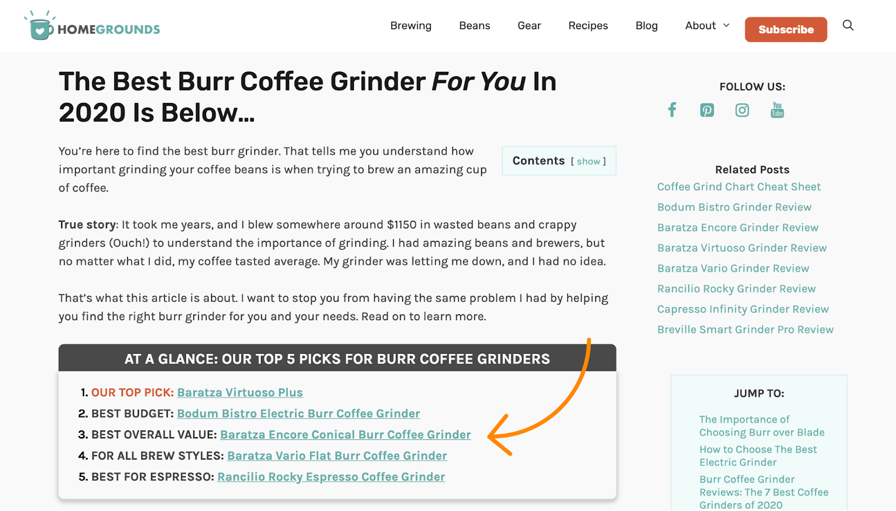

如何（一步步）搭建一个成功的亚马逊联盟网站¶
你想通过推广亚马逊的产品来赚点外快吗？
许多人通过亚马逊联盟客网站赚钱。但是每有一个成功案例，就有许多失败的故事。
例如，/r/juststart 子板块的这个人就声称他仅用 6 个月不到的时间就可以每个月从亚马逊赚 1,000 美金：
而这个人运营了两年多的网站每个月只能赚 38 美金。
如果你希望自己的故事可以多像第一张截图的案例一些，而少像第二张截图里的案例一些，而么这篇指南就是为你准备的。
通过这篇指南，你将了解：
- 亚马逊联盟项目是什么
- 亚马逊联盟项目如何工作
- 如何成为亚马逊联盟客
- 亚马逊联盟客网站是什么
- 为什么
SEO
对亚马逊联盟客网站很重要 * 如何搭建一个成功的亚马逊联盟客网站
亚马逊联盟项目是什么¶
人们可以通过亚马逊联盟项目（亚马逊联盟）向亚马逊引介销售（额）来赚钱。
亚马逊联盟项目如何工作¶
亚马逊会在你注册（联盟项目）的时候分配给你一个唯一的追踪 ID，它看起来像下面这样：yourname-20.
你可以将这个 ID 添加到任意一个亚马逊产品的链接中，以创建一个联盟客链接。
例子：
amazon.com/dp/B01K1C94E4
→
amazon.com/dp/B01K1C94E4 **?tag=yourname-20**
若有人点击了你的专属联盟客链接，并于之后的 24 小时内在亚马逊网站消费，你就可以从这笔消费中抽取佣金。
更好的是，他们不必购买你推荐的产品。如果你提供的链接指向菜刀，而点击的人最终购买了网球拍，你依然可以获得佣金。如果他们买了菜刀、网球拍和其他一堆东西，你可以从每件产品中挣得佣金。
亚马逊联盟项目这么受欢迎，这也是一部分原因。亚马逊出售的产品各式各样，所以如果你收到来自从未听说过的产品的一大笔佣金也是很正常的。
如何成为亚马逊联盟客¶
根据以下步骤：
- 前往亚马逊联盟主页;
- 登录亚马逊账户；
- 按照屏幕上的提示操作。
在注册过程中，亚马逊会要求提供网址。尽管你可以在这里提供一个社交媒体的链接，但如果你很认真的想通过亚马逊联盟计划挣钱，就需要建立一个亚马逊联盟客网站了。
亚马逊联盟客网站是什么？¶
亚马逊联盟客网站通过发布内容来对推广亚马逊上的产品，以促进销售。
如果你曾经在 Google 中搜索过像 “best [product type]”（“最好的 [产品类型]”）或者 “[product] review”（[产品] 评测）这样的词，那么你几乎肯定访问过这类网站。
来看一下 “best coffee grinder”（“最好的咖啡研磨机”）这个关键词排名靠前的结果：

这些人调研了最好的咖啡研磨机，将他们的发现总结到一篇博客文章中，并在其中包含了亚马逊的联盟客链接，访问者点击后可以购买推荐的产品。
“Aeropress review”（“爱乐压评测”）这个关键词的情况也类似。
这两类博文对读者来说都很有用，因为他们节约了用户的时间，让生活变得轻松。如果你想要购买一台新的咖啡研磨机，你没办法自己去测试多个产品。你不得不依靠其他人的调研和测试。
为什么 SEO 是亚马逊联盟客网站成功的秘诀¶
从亚马逊联盟客网站挣钱需要流量（访客）。
如果没有流量，就不会有人去点击你的联盟链接，也就意味着没有佣金。
如今，获取流量的方式有很多。但是大多数有成功经验的联盟客都通过 SEO 获得了大量流量。
这是为什么呢？
如果你在社媒或者邮件通讯中推广博客，你会获得流量的激增。但是一旦你的受众看过了博文，流量就会跌回到零。
这就是所谓的 “希望的巅峰”（“spike of hope”），紧随其后的是“否定的平线”（“flatliine of nope”）。
SEO 的效果则正好相反。如果你的网站之于那些每个月都有搜索量的关键词在 Google 有排名，你网站的流量将会是持续的——并且会随着时间逐步增加。
付费广告也可能起到相同的作用，但是它存在一些问题：
- 它需要花钱 （大多数人的时间比钱多）。
- 它要么就全有，要么就全无。 一旦你停止花钱（打广告），你的流量就会遗失至零。
- 它很难让你盈利 ，因为广告费会蚕食你的联盟佣金。
考虑到这一点，让我们来看看如何搭建一个每个月都能赚钱的亚马逊联盟客网站。
如何搭建成功的亚马逊联盟客网站¶
不同的人对成功有不同的定义。
对于一些人来说，成功意味着一个月能赚 1,000 美金的网站。对另外一些人来说，它可能是更加雄心勃勃的每月 10,000 美金。
无论数目大小，通往成功的步骤是一致的。
- 找到利基市场
- 找出可以带来利润的关键词
- 创建类型“正确”的内容
- 通过 SEO 为网站引流
- 为联盟客链接获得点击
1. 找到利基市场¶
你听说过 The Wirecutter 吗？
它属于《纽约时报》，可能是最受欢迎的亚马逊联盟客网站。The Wirecutter 网站有各种各样的评测，从磨刀石到立式办公桌。网站每个月仅从 Google 就能获得 390 万次访问。
小提示. The Wirecutter 网站现在已经被重定向到了 nytimes.com/wirecutter/
许多 Amazon 联盟营销的新人看到了这些网站就想要复制他们的成功。
不要犯这个错误。
像 The Wirecutter 这样的大网站拥有雄厚的资金和优秀的 SEO 团队。试图与他们竞争将会是一场艰苦的战斗。
相反，你应该选择一个可以主导的利基市场。
做法如下：
A. 找一些你感兴趣的东西¶
缺乏动机可能是人们在联盟营销遭遇失败的最常见原因，因此选择一个你觉得有趣的领域是很重要的。
那么，拿起纸和笔，记录下一些想法。
如果你正在苦苦挣扎，这份覆盖了联盟营销利基市场的巨型列表可能会有所帮助。
另外，你还可以从 The Wirecutter 的类目中找到灵感。
B. 查看佣金率¶
亚马逊的佣金率因产品类目而异。
目前的佣金抽成体系是这样的：
| Product Category | Commissions |
|---|---|
| Luxury Beauty, Amazon Coins | 10.00% |
| Digital Music, Physical Music, Handmade, Digital Videos | 5.00% |
| Physical Books, Kitchen, Automotive | 4.50% |
| Amazon Fire Tablet Devices, Amazon Kindle Devices, Amazon Fashion Women’s, Men’s & Kids Private Label, Apparel, Amazon Cloud Cam Devices, Fire TV Edition Smart TVs, Amazon Fire TV Devices, Amazon Echo Devices, Ring Devices, Watches, Jewelry, Luggage, Shoes, and Handbags & Accessories | 4.00% |
| All Other Categories | 4.00% |
| Toys, Furniture, Home, Home Improvement, Lawn & Garden, Pets Products, Pantry, Headphones, Beauty, Musical Instruments, Business & Industrial Supplies, Outdoors, Tools, Sports, Baby Products | 3.00% |
| PC, PC Components, DVD & Blu-Ray | 2.50% |
| Televisions, Digital Video Games | 2.00% |
| Amazon Fresh, Physical Video Games & Video Game Consoles Grocery, Health & Personal Care | 1.00% |
| Gift Cards; Wireless Service Plans; Alcoholic Beverages; Digital Kindle Products purchased as a subscription; Food prepared and delivered from a restaurant; Amazon Appstore, Prime Now, Amazon Pay Places, or Prime Wardrobe Purchases | 0.00% |
如果你感兴趣的利基市场属于0％类别，，请把他们从列表中划掉。推销没有报酬的产品是没有意义的。
我还会划掉那些佣金率不超过 2% 的类目，因为要想从这些类目赚钱，你需要大量流量。
小提示. 亚马逊的佣金率在过去 10 年左右的时间里 大幅下降 。最近一次削减是在 2020 年初，这使得一些人认为亚马逊联盟客网站已经死了。事实并非如此。他们只是不像以前那么赚钱了而已。
C. 查看产品价格¶
一般来说，产品单价越高，你能赚到的钱就越多。
例如，有人花 4,000 美金买了一台电脑，你获得的 2.5% 的佣金（100 美金）比有人花 40 美金买一条新的内存条带来的佣金（1 美金）要高的多。
但这并不意味着你应该选择进入一个价格高昂的利基市场。
人们在购买高价产品时不会那么冲动，意味着转化成交易的点击较少。这就是你的转化率。
现在提到产品价格，就有许多关于最有效点（sweet spot）的讨论，但人们共识的均价似乎在 30 美金到 300 美金之间。超过 300 美金，转化率会开始受损。低于 30 美金，你便无法赚取足够的佣金。
为了了解你的利基市场的价格，可以在亚马逊搜索一些产品。
¶
D. 估算流量要求¶
现在你对想进入的利基市场有了更多了解，就可以利用这些信息来估算“赚钱页面”（“money pages”）需要获得多少流量才能实现财务目标。
至于“赚钱页面”这个词，如果你不熟悉的话，他们是你网站上包含联盟链接的页面。
对亚马逊联盟客网站而言，产品综述可能是最好的“赚钱页面”。这些页面会列出某个类目内最好的产品，就像下面这张 The Wirecutter 的列表，它列举出了最好的扫地机器人：
这些往往是最赚钱的页面，因为他们推荐了多款产品，并且在 Google 搜索这些产品的用户已经有购买的意愿。这会提高联盟链接的点击率（clickthrough rate, CTR）。
那么流量估算的公式是什么？
月度目标 / （产品均价 * 类目佣金率 * 联盟链接平均点击率 * 平均转化率）
我们来举例说明。
如果你想进入的是咖啡这个利基市场，目标是 一个月赚 1,000 美金 。通过之前的操作，你了解到产品均价为 40 美金 ，而与咖啡相关的产品的佣金率为 4% 。
但是，你并不知道你文章的平均点击率（访问者点击亚马逊联盟链接的百分比），或者亚马逊的转化率（点击转化为交易的百分比）。
我们可能悲观一点，假设点击率为 10% ，转化率为 7.5% 。
让我们把所有的东西都代入计算：
1,000 / (40 * 4% * 10% * 7.5%) = 83,333
看起来我们的“赚钱页面”每个月需要 ~ 83,000 次访问才能完成 1,000 美金/月的销售目标。
当然，这和精确的科学计算还差很远。我们悲观的估计了一些眼字， 这是有原因的。
E. 估算流量潜力¶
现在你已经知道需要多少流量才能赚钱，接下来你需要估算该利基市场是否有足够的搜索流量潜力。
这里有一些简单的方法：
安装并激活 Ahrefs SEO 工具栏，接着在 Google 中搜索：
best（最好的） [你的利基领域的某款产品]（product in your niche） inurl:best
例如，就咖啡这个利基市场而言， 我们的搜索词可能是：
如果你对搜索词中的inurl:best 不解, 这样做的目的是限制 Google 在搜索结果中只呈现网页链接包含 “best” 的网页结果。在接下来的步骤中，你将看到它的重要性。
从现在起，将注意力放在搜索结果中出现的流量达标的利基网站上。
这里的关键词是“利基”。你应该忽略像福布斯、The Wirecutter 或卫报这样的大型通用站点。尽管他们拥有大量流量，但是他们不是你需要关注的。如果你没有发现任何利基网站，尝试更换不同的产品。
这里有一个满足我们要求的：
小提示.
确保你查看的是域名级别的，而不是页面级别的流量。
确保你查看的是域名级别的，而不是页面级别的流量。
这个网站每个月获得 ~210,000 次来自美国的搜索访问，从域名我们可以判断这是一个关注咖啡的利基网站。
然而，我们并不知道“赚钱”页面获得了多少流量。如果大部分流量去到了无关的博客文章，那对我们来说不是好兆头。
幸运的是，我们可以通过 Ahrefs 的网站分析报告更好地了解“赚钱”页面的流量情况。
只需要粘贴域名，前往 热门页面 报告，在“包含”过滤器中添加“best”，接着从“任意目标”下拉菜单中选择“URLs”。你会发现过滤后的页面几乎全部都是产品综述帖文。
你可以在过滤报告的顶部查看所有页面月度搜索流量总和的估值。
在这个例子中，这个数字是 107,714。
你应该记得我们之前估计每月需要 ~83,000 个访客才能达到 1,000 美金/月的赚钱目标，看起来这个利基市场可以轻松满足我们的潜在要求。
F. 估算竞争度¶
进入一个你需要奋战多年才能达到流量目标的利基市场是没有意义的。因此你需要确保有一些不需要太多繁琐的 SEO 工作就可以“破解”的主题。
SEO 是一场复杂的博弈。包括了许多排名因素和最佳实践。但最重要的是你的页面获得了多少高质量外链。
Google 在其关于搜索算法的页面讨论了外链的重要性。
在我们开展的一项针对十亿多网页的研究中，我们还观察到了网页获得的来自独立网站（指入域名）的外链数量与其搜索流量之间的清晰关联。
所以在我们关闭之前一步所得的过滤后的 热门页面 报告之前，请关注 RDs （指入域名）这一栏。该栏展示了每个页面的指入域名数量。
观察那些拥有流量的页面，如果他们的指入域名很少，或者没有指入域名，就标志着这个话题的竞争度不高。
观察 Homegrounds 的报告，我们看到许多这样的页面：
如果对 wareable.com 执行相同的操作，我们会看到相反的情况。几乎每一个页面都有来自数以千计的指入域名的外链，这表示这一利基领域的许多话题都很难攻克。
遇到这种情况时，你有两个选项：
- 进一步缩小利基市场的范围。 除了可穿戴设备，我们可能还想关注智能手表或者健康追踪器。如果那些利基市场看起来还是过于广泛，你可以把范围进一步缩小至像儿童智能手表这样的话题。
- 选择不同的利基市场。 如果你对缩小（利基市场的）范围不感兴趣，就可以放弃原来的主意，重复以上步骤以找到新的利基市场。
2. 进行关键词调研¶
找到一个有潜力的利基市场是困难的；而关键词调研则相对简单。
如果你懒得动，甚至可以直接将之前步骤过滤出的 热门页面 报告导出。它应该能给你足够多的有利可图的“产品综述”话题，这够你忙好几个月了。
然而，如果你想更有策略并找出更多关键词，可以这样做：
- 前往 Ahrefs 的关键词分析工具;
- 输入几个和利基市场及产品相关的“种子”关键词；
- 前往“所有关键词”报告。
如果我们想进入咖啡这个利基市场，界面看起来会是这样的：
你很可能从这份报告中看到成百上千个关键词，但其中有一些是无关的。因此我们接下来会使用内建的过滤器找出我们需要的三种关键词。
A. 找到产品综述关键词¶
重申一下，产品综述关键词〔如：“best coffee machine”（“最好的咖啡机”）、“best coffee grinder”〕通常是亚马逊联盟客网站的最大利润来源。
因此，我们需要找出那些拥有潜在流量，但是排名难度并不是太高的产品综述关键词。
为此，我们需要添加以下三个过滤器：
- 包含： “best”
- **关键词难度 (
KD
): <=10 * 搜索量:** >=500
小提示.
你可以稍微放宽对搜索量阈值的限制，这个数字某种程度上与利基市场有关。
你可以稍微放宽对搜索量阈值的限制，这个数字某种程度上与利基市场有关。
现在你应该可以看到一张按照月度搜索量排序的排名难度较低的相关关键词列表。
现在，注意关键词难度指标只能给你关于排名难度的粗略提示。而月度搜索量只能给出该话题流量潜力的粗略估计。
所以接下来你需要做的是筛选报告，逐一分析关键词，并将优质的主题关键词保存到关键词列表中。
如果有上千个关键词，也无需担心。你不需要分析所有的关键词，只需要 20~50 个关键词就可以开始。
所以流程是什么呢？
在我们讨论技术内容之前，有一点很重要，那就是在寻找关键词时，你需要运用常识。如果（候选）关键词是“best coffee grinder”，那么这个词是有意义的，因为这个产品亚马逊有售。如果（候选）关键词与你可能会在亚马逊购买的商品无关，例如“best coffee in los angeles”（“洛杉矶最好的咖啡”），你可以马上将它排除掉。
为了找出有意义的关键词，你可以点击 SERP 按钮，查看 Google 中之于该关键词排名靠前的页面……
…… 然后按照这张流程图继续工作：
在进一步讨论之前，我们需要简单解释一下域名评分的概念。
域名评分（DR）根据网站的外链情况来衡量它的权威度。范围在 0 到 100 之间。通常来说，这个数值越高，网站的权威度就越高。
这是我们流程的一部分，因为我们要找的是一个全新或者相对较新的网站能够取得排名的关键词，这样的网站的权威度往往较低。如果已经有低权威度的网站获得了排名，这就预示着我们的网站也能获得排名。
这里有一个很好的关键词示例：
标记出的网页有 4 个指入域名，每个月获得数百个来自美国的搜索流量，并且处于一个热门的、低权威度（DR）的网站之上。
这里有一个不太好的关键词示例：
虽然搜索结果中有几个页面来自指入域名较少的低权威度利基网站，但是他们都没有能每个月获得一定量的搜索访问量。
下图展示了发现优胜关键词后如何将他们添加至关键词列表。
一直这样做，直到你找到 25~50 个关键词。
B. 找到产品评测关键词¶
像 “aeropress review”（“爱乐压评测”）和 “baratza virtuoso 评测” 这样的词就是产品评测关键词。
尽管每个细分市场的情况都不同，这些关键词的流量潜力鲜有能与产品综述关键词匹敌的。你可能只能找到少数几个值得去做排名的评测关键词。
那何必还要为他们费心呢？
这个主要原因：
- 尽管这些词的流量潜力不是十分巨大，但是要获得这些关键词较高的排名相对简单；
- 产品评测可以助力产品综述的SEO（稍后详述）。
为了找出这些关键词，你需要在“所有关键词”报告中加入以下过滤条件：
- 包含： “review”
- 关键词难度 ：<=10
- 搜索量： >=200
以下是我们的咖啡例子显示的结果：
这些并不都是评测类的关键词，但是你可以轻易发现他们。
对于那些有意义的关键词，你可以执行上面的流程图，将优胜的关键词加入关键词列表。
C. 找出博客关键词¶
大多数亚马逊联盟客网站都不只发布“赚钱”帖文。他们还发布博客文章和其他信息类内容。
我们来看一下 homegrounds.co：
他们网站有一整版内容专门提供有用的冲泡指南。
这样做是有意义的，原因我们会在后面进行讨论。现在，我们想要找出一些信息类的关键词，这样我们就可以围绕这些关键词来写作一些博客文章和指南。
为了找出这些关键词，需要在“所有关键词”报告中加这些过滤条件：
- 包含： who, what, when, where, why, how, guide, tutorial, ideas, tips
- 搜索量： >=500
寻找那些与你会在综述里评测的产品密切联系的话题。
例如，如果咖啡是你的细分市场，那么像“how to use a frech press”（“如何使用法式滤压壶”）和“how to make coffee”（“如何煮咖啡”）这样的话题就很有意义了，因为你几乎肯定会评测法式滤压壶和咖啡机。
这个部分不要想太多。只需要在列表中添加 20 到 50 个关键词，就可以继续了。
3. 创建类型“正确”的内容¶
假设你已经选定了域名，做好了网站。是时候开始写作和发布一些内容了。
在这一部分，我们将讨论如何创建以下三种类型的内容：
- 产品综述
- 产品评测
- 博客文章
让我们从最重要的开始。
A. 产品综述¶
请遵循以下四个步骤：
- 找出需要包含的产品
- 找出人们关心的内容
- 找出最好的产品
- 写起来
1. 找出需要包含的产品¶
产品综述会对多个产品进行评测，但是你如何知道应该评测哪些产品呢？
这里介绍一些方法：
逛亚马逊¶
面对现实吧：亚马逊在推荐最好的产品方法做得相当不错。看看 “coffee grinder” 这个关键词的前几个搜索结果就知道了。
这些产品坐拥成百上千条评论，且没有一个产品的评分低于四星。
因此一种了解你想要了解的产品的好办法是在亚马逊搜索这类产品。
查看高排名页面¶
逛亚马逊是一个很好的起点，但它可能会让你不知所措。另外一种比较好的策略是在排名靠前的页面中寻找共同的内容。
例如，“best coffee grinder” 这个关键词排名靠前的结果中，有三个都将 Baratza Encore Conical 研磨机列为最好的之一：
你不需要任何过人之处都能知道这款产品值得出现在一篇产品综述中。
2. 找出人们关心的内容¶
为了创建一篇有用的产品综述，你首先需要了解哪些产品属性对买家来说是重要的。
这里有一些方法可以来帮助你确认：
浏览亚马逊产品评论¶
浏览几个你可能会放进文章中的产品，查看用户评论。你很快就会明白哪些东西对买家来说是重要的。
例如，查看下面的评论，只需要几秒钟你就可以知道研磨粒度、清洁简单和便于携带是人们在选购一台手动咖啡研磨机时会考虑的重要因素：
如果你不喜欢浏览每一则评论，可以查看 “Read reviews that mention”（“评论提及的……”）板块的标签。
亚马逊从评论中提取这些信息，这些信息往往可以提示人们所关心的东西。
查看排名靠前的页面¶
浏览一些排名靠前的页面，寻找共同点。
例如，这里两篇咖啡研磨机的综述文章都提到了研磨均匀度：
开展内容差距机会分析¶
内容差距机会分析可以展示多个页面共有的排名关键词。
通过分析之于你的目标关键词排名靠前的页面，你可以进一步了解人们感兴趣的内容。
开展分析时，只需要将排名靠前的链接粘贴进 Ahrefs 的内容差距机会分析工具中。
如果我们就 “best coffee grinder” 这个关键词分析三个排名靠前的页面，会注意到他们同时还之于与咖啡研磨机种类相关的关键词有排名，包括：盘式磨豆机（burr grinder）、手动咖啡研磨机（manual coffee grinder）、手摇咖啡研磨机（hand grinder）、电动咖啡研磨机（electric grinder）等。
我们还注意到人们会根据咖啡种类来搜索最好的研磨机，如：浓缩咖啡（espresso），法式滤压壶（french press）咖啡等。
产品的做工和材质似乎也很重要。
我们在撰写文章、调研或者测试产品的时候会考虑这些因素。
3. 找出最好的产品¶
大多数刚开始做亚马逊联盟客网站的人都不会自己去测试产品。相反，他们会在线研究产品，从其他评测中提取观点。
尽管你可以这样做，但是我们并不建议，原因有二：
如果你想创建一个长期有用的网站，并且能够负担得起，那么对产品进行真正的评测是值得的。
以下是一些降低成本的方法：
- 从便宜的产品开始。 自己测试 10 台 500 美元的咖啡机可不便宜，但是 10 台 30 美金的咖啡研磨机可能是可行的。浏览你的关键词列表，从成本较低的产品开始测试。
- 一旦你完成了测试，就把他们卖掉。 没有人会需要 10 台咖啡研磨机。完成评测后，你可以把挂到 eBay 上。即使你损失了原价的 ¼，这对有用的独特内容来说只是一笔小钱。
- 要求厂家评测产品。 不要对此抱太大希望。特别是你刚进入这个领域还没有名气的时候。
4. 写起来¶
产品综述和普通的博客文章不一样。你需要即时向读者提供他们想要的信息。
在产品综述方面，你需要直接告诉读者最终获胜的是哪款产品。
基于此，你应该按照倒金字塔格式创建一则列表帖文。
点击这里了解更多信息。
B. 评测帖文¶
上面大多数关于产品综述的建议都适用于单独的产品评测。你需要了解人们在意和感兴趣的内容，你还需要把产品研究透彻。
也就是说，通常最好是在撰写产品综述的同时撰写单独的产品评测。
为什么呢？因为当你在撰写产品综述文章的时候，你实际上是在同时评测多个产品。只不过产品综述对每一个产品进行了总结，而不是讨论细节。
但关键点是：你需要通过调研产品来创建产品综述，因此你可能也会将调研结果发布在单独的产品评测帖文中。
这样做的意义还有以下其他几点原因：
- 评论是相对的。 假设你评测了一款咖啡研磨机。除非你把它和其他类似产品放在一起调研和测试，否则你怎么知道这款产品有多好或者多差呢？你可能很容易地就给它打个五星，却发现它比市面上其他价格相当的产品差很多。
- 对SEO 可能有帮助。发布可以回溯到已有的产品综述的单独的产品评测帖文可能对 SEO有利。（下一章节将对此作进一步讨论）
- 便于格式化/模板化。 为综述文章调研产品可以告诉你人们的关注点在哪里。你可以使用这些知识来为单独的产品评测帖文创建模板。
我们来讨论一下最后一点。
如果你已经创建了关于最好的咖啡研磨机的产品综述文章，你就已经知道研磨的均匀度和易用性是人们关心的产品属性。
知道了这一点，你就可以很轻松地为这个类目的所有产品制定测试样式的模板。你只需要将这些指标用作子标题，并就每个属性为每个产品按 1–5 打分即可。
因为你已经在每个产品评测中使用了相同的格式，并且在创作产品综述时进行了调研，创建这些帖文应该不会花费你太多的时间。
C. 博客文章¶
撰写优质的博客文章本身又完全是另外一个话题了。
幸运的是，我们有许多关于如何撰写博客文章的指南，所以这里我就只放上这些文章的链接，而不赘述了。
延伸阅读
- 9 个步骤撰写（人们真的想要去读的）博客文章（英文）
- 实战有效的17个博客运营技巧（新手必备）
- 什么是 SEO 内容？如何撰写可得排名的内容（英文）
- 如何将你的内容创作工作外包给自由职业写手（4 个步骤）（英文）
4. 通过 SEO 为网站引流¶
SEO 不是火箭科学，但我们也无法在这篇文章中从头到尾进行总结。元素实在是太多了。
相反，我会在这里讨论两个重要的方面，然后提供一些指向这个博客 SEO 教程的链接。
A. 创建内容中心¶
内容中心是关于类似主题的相互链接的内容集合。
他们由以下三部分组成：
- 中心页面/支柱内容： 这是一个关于广泛主题的高阶指南。
- 子页面/集群内容： 这些是关于中心主题各个部分的深度指南。
- 超链接： 他们联结了中心页面和子页面。中心页面链向了所有的子页面，每个子页面又链回了中心页面。
对于亚马逊联盟客网站来说，创建一个以产品综述文章为中心页面、产品评测帖文为子页面的内容中心是一个不错的策略。
从 SEO 的角度来看，这样做有几个主要的好处。
首先，他们会在“赚钱”页面之间生成更多富含关键词的内部链接。因为 Google 会使用锚文本来理解页面的内容，所以这样做对排名有帮助。
Most links do provide a bit of additional context through their anchor text. At least they should, right‽
— 🍌 John 🍌 (@JohnMu) November 23, 2017
其次，由于佩奇排名算法的工作原理，内容中心所有的页面互相从反向链接中获益。
如何搭建内容中心呢？
- 选择一篇内容综述文章；
- 为每一款提到的产品添加链接；
- 为产品评测帖文添加指向产品综述文章的链接。
例如，假设你想围绕一篇关于 “best coffee grinders” 的产品综述文章创建内容中心。如果你已经为列表中提到的某些产品撰写了评测帖文，只需要从中心页面链接到他们，反之亦然。
这里有一个真实的例子：
这份最好的咖啡研磨机列表有一款产品是 Baratza Virtuoso Plus。
在简短的描述中，有一个指向该产品完整评测的链接。
在这则产品评测帖文中，包含了指向产品综述文章的反向链接。
如果你对综述里的所有产品都这样操作，你就创建了一个内容中心了。
B. 链接建设¶
外链可能是最重要的 Google 排名因素。他们是 Google 排名算法的基石，多项独立研究都发现了来自独立网站的外链数量与网页自然搜索流量之间的强关联。
对亚马逊联盟客网站而言，你希望直接为像产品综述文章和产品评测帖文这样的“赚钱”页面建立直接的外链。
做到这一点有许多方法，这里介绍一个：
产品综述文章对特定种类的产品进行评测。它可能是咖啡研磨机，立式办公桌，WiFi 路由器等。想想产品的目的，问问自己，它能帮助人们做什么？
这里有一些例子：
- 咖啡研磨机 -> 帮助人们 做出更好喝的咖啡
- 立式办公桌 -> 帮助人们 更健康地在家工作
- WiFi 路由器 -> 帮助人们 更安全地上网
现在你已经确立了产品的功用，可以寻找那些在讨论实现这个功效的同时提及你的产品的文章了。接着你可以联系他们，建议在文章中加入指向你的产品综述文章的链接，以帮助他们的读者更好的选择对他们来说最好的产品。
让我们用一个例子来解释。
如果我们在 Google 中搜索“how to stay healthy when working from home”（“如何能在居家工作的同时保持健康”），很可能所有的结果都是带有相关提示的博客文章。
但是我们并不知道这些文章有没有提到立式办公桌，所以让我们使用 Google 搜索操作符来限定提及 “standing desk” 的结果。
出现了 940 万个结果。
以下只是其中的一个：
尽管这篇文章推荐了一款特定型号的立式办公桌，很明显如果有多个选项，对读者的帮助更大。因此如果这篇文章可以包含指向最好的立式办公桌列表的帖文（像这篇）就更有用了。
所以，对我们来说，建议对方在文章中加入指向我们比较最好的立式办公桌的帖文的链接是有意义的。
以下是一封电子邮件的示例：
Hey [name],
Just came across your guide to staying fit and healthy as a remote worker.
Loved the tip about standing desks, and I agree that the Jarvis is a great option. However, I spent XX hours testing XX standing desks and found that the Jarvis is actually quite expensive for what it is, and that [other model] is almost as good for less money.
Perhaps it might be worth including my comparison to give readers some extra choice?
[link]
Thanks,
[name]
译：
你好 [对方名字]，
我刚刚碰巧看到了你写的关于如何在远程工作时保持身体健康的指南。
我很喜欢你对于使用立式办公桌的建议，我也觉得 Jarvis 是一个不错的选项。但是，在花了 XX 个小时测试了 XX 款立式办公桌后我发现 Jarvis 的价格实际上偏高了，而 [另外的型号] 差不多（和 Jarvis）一样优秀但是却更便宜。
或许你可以将我的这篇比较帖文加入这篇文章，给你的读者多几种选择？
[链接]
谢谢，
[名字]
如果你向多人发送类似的电子邮件，应该能够为你的综述文章获得一些高质量的外链。
当然，这只是一个想法。
查看以下几篇文章，了解更多外链建设的策略：
延伸阅读
在为“赚钱”页面建立外链时艰难前行?
为相关话题创建博客文章和其他有用的内容，接着使用中间人技术来提振他们的表现吧。
5. 获得点击¶
因为 24 小时缓存期的机制，如果你想要赚钱，就需要驱动点击前往亚马逊。
这里我不会详述细节，因为如果你才刚刚起步，转化率优化不是你应该沉迷的东西。
但是，你需要确保已经掌握了基本知识，他们是：
- 尽早放置推荐表格。 推荐表格在产品综述文章中罗列了推荐的热门产品，并包含了指向这些产品的链接。他们应该出现在文章的前部，因为你想要人们能够快速找到他们想要的信息。
- 使用明显的亚马逊链接。 能从你网站设计脱颖而出的按钮往往效果最好。
- 给人们一个相信你的理由。 这一点你越快能做到越好。The Wirecutter 的策略可能是这里的金标准。去看看他们的介绍内容吧。
一旦你的网站获得了可观的流量，记得查看下面的资源确保你获得了尽可能多的点击。
延伸阅读
结语¶
尽管亚马逊最近调低了佣金的抽成比例，但是围绕亚马逊建立联盟客网站依然是开展联盟营销的好办法。
也就是说，一旦你获得了可观的流量，就值得去关注其他的联盟客项目，他们可以会为同样的产品提供更为丰厚的佣金。尽管通常情况下亚马逊的转化是最高的，但是由于更高的佣金比例，通过加入其他的联盟项目往往可能帮你赚更多钱。
有问题？在 Twitter 上告诉我吧。
凡本网注明"来源：XXX "的文/图/视频等稿件，本网转载出于传递更多信息之目的，并不意味着赞同其观点或证实其内容的真实性。如涉及作品内容、版权和其它问题，请与本网联系，我们将在第一时间删除内容！
作者: Joshua Hardwick
来源： https://ahrefs.com/blog/zh/amazon-affiliate-marketing/